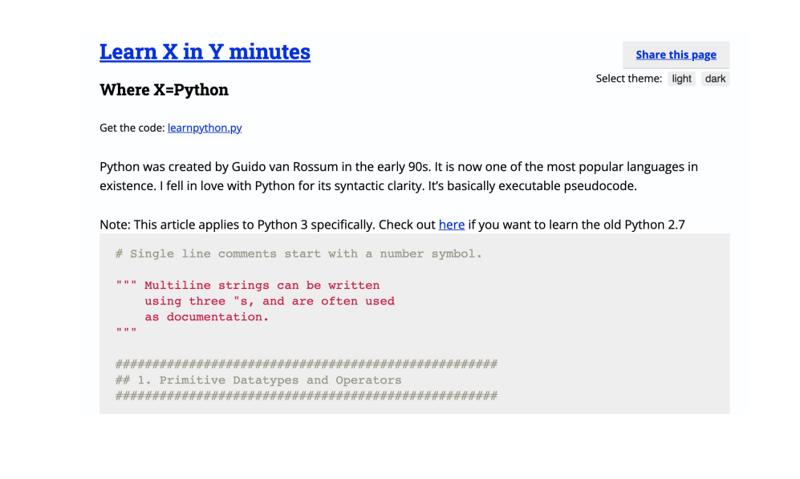

Don’t run out and buy your cone-shaped bras just yet.
What I mean is programming will keep evolving. In order
to stay relevant, you have to keep reinventing yourself.
There’s always new trends, new technologies and new
languages. Great programmers relish learning new things,
even if it means they become a beginner again.
The world will keep moving, if you stay in one place, you’ll
eventually be left behind.
I know programmers who never
learnt anything else apart from Fortran. I know
Objective-C programmers who can’t persuade themselves
to make the leap and learn Swift, even though Apple is
telling developers that Objective-C will be phased out. We
all know that Apple never makes threats that they don’t
carry out, just look at the optical drive (and soon the
headphone jack?)
Don’t be the optical drive. Or rather, don’t be the laptop
that’s still trying to play CDs. If your needs change, learn to
use a new tool. Keep learning, stay relevant.
Are you a web developer who always wanted to get into
mobile development?
Pick a platform and learn iOS or
Android. Are you a front-end developer who is tempted by
the full-stack? Pick up web development with Node. If you
already understand the core programming concepts,
picking up a few more languages will be a lot easier than
starting from scratch.
“Learn x in y minutes” is a great resource for existing
programmers to learn new programming languages. Check
out their resources here: learnxinyminutes.com
